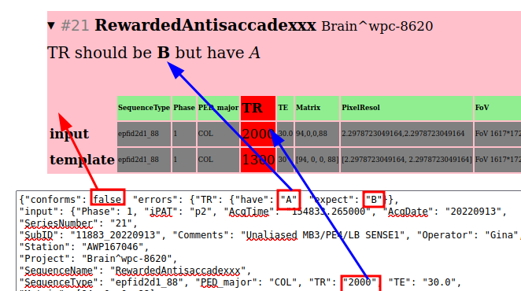

template_checker¶
check a header against best template
Module Attributes
Dictionary for mismatches in input ( |
|
Functions
|
Parse array values from different dicom types |
|
Clean up errors that are not actually errors in "realtime" dicom headers. |
|
Given a template and hdr, find any mismatches (non-conforming errors). |
|
float or zero |
|
Compare only 3 decimals of a float or array of floats. |
Classes
Dictionary for mismatches in input ( |
|
|
cache db connection and list of tags read a dicom file and report if it conforms to the expected template |
- class template_checker.CheckResult[source]¶
conforms: false when aacq2sqlite.DBQuery.CONSTStemplate-parameter betweeninputandtemplatemismatcherrors: nested dict of {mismatched_param:{'have':...,'expect':...}}(parameter keyed dictionary withErrorComparevalues)input: dict of all parameters of an input dicom headertemplate: all the parameters of a template (matching Study, SeriesName)Also adcmmeta2tsv.TagValues
Here’s an example of
CheckResultdatastructure in html/javascript on the static debug-enabled page
- class template_checker.ErrorCompare[source]¶
Dictionary for mismatches in input (
havekey) and template (expectkey)
- class template_checker.TemplateChecker(db=None, context='DB')[source]¶
cache db connection and list of tags read a dicom file and report if it conforms to the expected template
- check_file(dcm_path)[source]¶
File disbatch for
TemplateChecker.check_header()- Parameters:
dcm_path – path to dicom file with header/parameters to read.
- Returns:
output of check_header
- Return type:
- template_checker.arraystr_to_float(val)[source]¶
Parse array values from different dicom types
- Parameters:
val (str) – array of floats stored as string
- Returns:
converted to python list
- Return type:
list[float]
>>> arraystr_to_float("[1.0, 2.0]") # saved dicomes [1.0, 2.0] >>> arraystr_to_float("1.0,2.0") # realtime dicoms [1.0, 2.0]
- template_checker.clean_rt(errors)[source]¶
Clean up errors that are not actually errors in “realtime” dicom headers.
Currently (2025-02-26) only checks
PixelResolusingfuzzy_arr_check():param errors: have/expect dict of errors :returns: errors with close ones removed- Parameters:
errors (dict[str, ErrorCompare])
- Return type:
dict[str, ErrorCompare]
- template_checker.find_errors(template, current_hdr, allow_null=[])[source]¶
Given a template and hdr, find any mismatches (non-conforming errors).
- Parameters:
template (dict[str, str]) – expected values
current_hdr (dict[str, str]) – values we currently have
allow_null (list[str]) – current keys that can be null. see py:class:TemplateChecker.context
- Returns:
dictionary of tag key names and the have/expect values
- Return type:
dict[str, ErrorCompare]
>>> find_errors({"TR": "1300"}, {"TR": "1300"}) {}
>>> find_errors({"TR": "1300"}, {"TR": "2000"}) {'TR': {'expect': '1300', 'have': '2000'}}
- template_checker.fuzzy_arr_check(have, expect)[source]¶
Compare only 3 decimals of a float or array of floats. Used by
clean_rt()when comparing realtime dicom headers to DB- Parameters:
have – string of floats on one side
expect – string of floats on another
- Returns:
true if they are roughly the same
- Return type:
bool
>>> fuzzy_arr_check('2.00001', '2') True >>> fuzzy_arr_check('[2.00001, 0.0]', '2.0,0.0000001') True >>> fuzzy_arr_check('[2,0]', '2,1') False